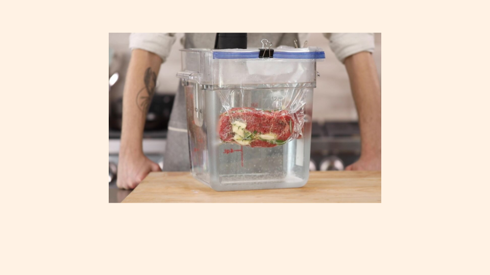

Our chef has been busy putting together the perfect menu for the summer months. This season, we explore the spicy flavors of the southwest in our appetizer collection. Stop by to try these new additions along with our main courses while the days are still long.
This week I am extremely excited about a new cooking technique called sous vide. In sous vide cooking, you submerge the food (usually vacuum-sealed in plastic) into a water bath that is precisely set to the target temperature you want the food to be cooked to. In his book, Cooking for Geeks, Jeff Potter describes it as ultra-low-temperature poaching.

Next month, we will be serving Sous Vide Salmon with Dill Hollandaise. To reserve a seat at the chef table, contact us before .